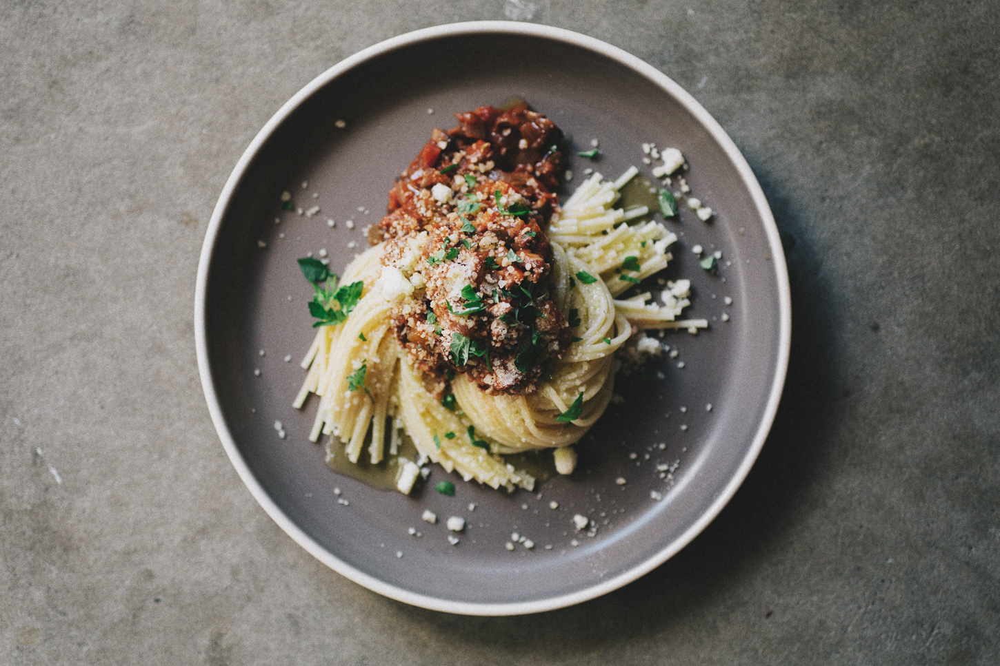

Pasta Recipes

Sprouted Kitchen's Mushroom Bolognase
Ingredients
- 2 Tbsp. extra virgin olive oil
- 1 small yellow onion, minced
- 2 ribs celery, minced
- 1 medium carrot, peeled and minced
- 4 cloves garlic, minced
- 2 Tbsp. salted butter
- 16 oz. mixed mushrooms (anything but shitake!), cleaned, stemmed and minced small
- 2 Tbsp. tomato paste
- 1/3 cup whole or oat milk
- 1/2 cup red wine
- 1 cup prepared marinara sauce (Rao’s or Victoria are our faves)
- 1 tsp. Italian herbs
- 1 tsp. fennel seeds, chopped
- red pepper flakes, optional
- 3 Tbsp. creme fraiche, optional
- 3/4 lb. long pasta
- grate parmesan cheese, for serving
- fresh Italian parsley, for serving
Clues
- Heat a large Dutch oven over medium heat, warm the olive oil. Once hot, add the chopped onion, celery, carrot and garlic and cook for 5 minutes until tender
- Add the butter, mushrooms and a few pinches of sea salt. Stir and cook the mushrooms down, stirring occasionally, until most of their water is cooked out. About 6-8 minutes.
- Add the tomato paste, milk and wine. Stir and cook again for another 15 minutes to reduce, stirring occasionally.
- Add the marinara sauce, herbs, fennel and red pepper flakes, and taste for salt and pepper. Turn the heat to low and simmer for another 10 minutes. The texture should be saucy but not soupy, continue to cook if you’d like it thicker. Stir in the crème fraiche, if using.
- Cook your pasta according to instructions. Drain out most of the water, leaving just enough to keep the pasta from drying out. Stir in a pat of butter, vegan or not.
- Serve each bowl with a portion of pasta, sauce, parmesan and fresh herbs.
Back to Main